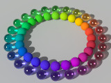

 MakeSpectrum is a library module proposed for the Persistence of Vision Raytracer (POV-Ray) Object Collection that generates reflective spectral power distribution (SPD) curves. The module is intended for those doing spectrum-based rendering but who have no easy access to or desire to use a spectrophotometer. The user submits a color specification, and a spline is returned. The user can then use existing tools to convert the splines to POV-Ray’s native RGBFT format. The demo scene description files illustrate two ways to convert the curves to colors.
The spectral curves are intended as pigment or interior colors. If used for emission or as light sources, the colors will not be as expected.
| Key Files | |
|---|---|
| File | Description |
makespectrum.html |
The user manual (this document) |
makespectrum.inc |
The MakeSpectrum software |
makespectrum_ls4.pov |
A scene description file demonstrating usage with Lightsys IV |
makespectrum_rgb.pov |
Scene description files demonstrating usage with SpectralRender |
makespectrum_spectral.pov |
|
makespectrum.jpg |
Sample output images |
makespectrum_thumbnail.jpg |
|
| Administrative Files | |
| File | Description |
makespectrum_description.txt |
A brief description of MakeSpectrum |
makespectrum_keywords.txt |
A list of keywords |
makespectrum_prereqs.txt |
Prerequisites |
makespectrum.css |
Formatting for this user manual |
Depending on where you obtained this library, there may be other administrative files included with this download,
including one named README{series-of-digits}.html which contains important information about using the POV-Ray Object Collection.
Please see the Object Collection User Guide if this file is not present.
makespectrum_rgb.pov and makespectrum_spectral.pov.
makespectrum_rgb.pov and makespectrum_spectral.pov, and by any other scenes that use SpectralRender.
All file names in this module and all global and local identifiers defined in makespectrum.inc comply fully with the
Object Collection naming standards, as
revised August 2008 and
proposed August 2012.
The files in this module may be safely stored in the same folder as other fully compliant Object Collection modules.
The reserved prefixes for this module are “MakeSpectrum” and “MakeSp,” including any uppercase and lowercase variants.
To avoid conflicts, do not introduce into your scene description file any identifiers with either of these prefixes as names, or any identifiers that start with either of these prefixes plus an underscore.
File makespectrum.inc uses the standard include files colors.inc and math.inc.
The identifier View_POV_Include_Stack from the standard include file debug.inc is referenced by makespectrum.inc, although debug.inc itself is not used.
Lightsys and SpectralRender are not part of the Object Collection, so if you use these, there is no guarantee that their identifiers will not conflict with those of compliant Object Collection modules.
If necessary, most Lightsys identifiers can be destroyed by macro CIE_ReleaseMemory() after there is no further use of the features of Lightsys and SpectralRender.
(The identifiers that remain are those defined in lightsys.inc, lightsys_colors.inc, and lightsys_constants.inc.)
SpectralRender does not have a similar deallocation macro, but as of the release of MakeSpectrum 1.1, its identifiers do not conflict with any compliant Object Collection modules.
Include this file once prior to using any of the macros:
#include "makespectrum.inc"
Including the file more than once is harmless, though unnecessary.
Set the scene’s assumed gamma to one:
global_settings { assumed_gamma 1 }
Rationale: This is the only physically realistic setting. Although this leads to colors that are unexpectedly pale, MakeSpectrum is set up to compensate. See the Gamma section for more information.
Set the default diffuse to one. In POV-Ray 3.7 or later:
#default { diffuse 1 ambient rgb MyAmbientColor emission 0 }
For earlier versions of POV-Ray:
#default { diffuse 1 ambient rgb (IsRadiosityUsed? 0: MyAmbientColor) }
where MyAmbientColor is your global ambient lighting color; and IsRadiosityUsed is true if you are using radiosity, false if not.
Rationale: MakeSpectrum applies diffuse levels to the SPDs themselves; therefore, at the finish level, the diffuse should be set at full reflectance. MakeSpectum’s default diffuse matches POV-Ray’s factory default, but this can be changed.
Through at least POV-Ray 3.8, a warning will be issued that the experimental feature spline is used. This is normal and expected.
If your scene defines a large number of spectra, they may take a few seconds to parse.
| Identifier | Type | Description | Default |
|---|---|---|---|
MakeSp_Diffuse |
float | An automatic multiplier for the color arguments of many of the macros.
This operates like #default { finish { diffuse } }, except that the diffuse value is applied directly to the color, rather than the finish.
|
0.6 |
MakeSp_Gamma |
float | A gamma or non-linear decoding that many of the macros will automatically apply to their color arguments.
Use a positive number for an exponential gamma, or MAKESP_SRGB, MAKESP_BT709, or MAKESP_BT2020 for a special non-linear formula.
Zero or a negative value will cause a fatal parse error. |
MAKESP_SRGB |
MakeSpectrum works in
linear color space,
and works best with assumed_gamma 1; this is the only physically realistic setting.
However, colors are traditionally specified with
non-linear formats,
and most such colors look too pale with assumed_gamma 1.
The macros in MakeSpectrum can decode these colors so that they look correct with assumed_gamma 1;
but in order to decode the colors properly, the macros must know how the colors were encoded.
This is specified either via a Gamma argument to the macros or via the global parameter MakeSp_Gamma.
By decoding gamma into the SPD itself, rather than at the global_settings level, MakeSpectrum can use traditional colors while maintaining physical realism.
Using assumed_gamma 1 should also make predictable lighting conditions easier to set up in your scene.
The gamma value must be either a positive number or a code for a special non-linear formula, or transfer function.
All other values will result in a parse error.
The special codes are MAKESP_SRGB, MAKESP_BT709, and MAKESP_BT2020.
The following are typical gamma values:
MAKESP_SRGB
srgb series of keywords in RGB rendering.
It is appropriate for most colors, and is the default setting for the global parameter MakeSp_Gamma.
Do not use the srgb series of keywords with MAKESP_SRGB; this will cause the color to be decoded twice!
colors.inc.
Do not use the srgb series of keywords with gamma 2.2, as this will cause the color to be decoded twice.
assumed_gamma 1.
If you choose 1.0 for your MakeSpectrum gamma and have already been using the srgb series of keywords, then you should continue to use these keywords with MakeSpectrum.
srgb series of keywords with gamma 1.8, as this will cause the color to be decoded twice.
MAKESP_BT709 & MAKESP_BT2020
srgb series of keywords with these codes; this will cause the color to be decoded twice.
Note that these gamma applications are for the tracing phase only.
They do not apply to the command line output options Display_Gamma and File_Gamma, which should remain at their usual settings.
MakeSpectrum creates spectral power distribution (SPD) curves in the form of a spline.
The spline argument is the wavelength in nanometers, and the .y component is the reflection amount at the corresponding wavelength.
Two styles of SPD curves can be created: RGB composites, and more natural curves.
MakeSp_ that do not have Meta in the name.
MakeSpectrum() is the basic macro for creating such SPDs;
however, MakeSpectrum()’s output does not correspond to familiar RGB specifications.
SPDs that yield colors resembling those of RGB composites, or metamers of the RGB colors, can be created with the macros whose names start with MakeSp_Meta_.
Note that metamerism is affected by the lighting environment. An RGB composite curve and a “natural” curve that are metamers of each other under one light may look different from each other under a different light.
The SPDs are calibrated using an integration step size of 1 nanometer.
Larger step sizes will reduce the accuracy of the hue and saturation of the colors;
the RGB composites are especially sensitive to this.
Lightsys IV defaults to 5 nanometers, but this can be changed by setting the parameter CIE_IntegralStep.
SpectralRender is fixed at 10 nanometers.
In order to provide boundaries for physically realistic renders, parse warnings are issued for color inputs and reflection outputs outside the range 0...1. Diffuse values that are non-positive or greater than one will also cause parse warnings. In order to avoid discouraging creativity, these messages are kept at the warning level, and will not abort the render.
The macros set two flag variables:
MakeSp_Negative is set to true if the SPD is negative at some wavelengths, false if none of the wavelengths are negative.
MakeSp_Hyper is set to true if the SPD is greater than 1.0 at some wavelengths, that is, if it reflects more light than it receives; or false if none of the wavelengths are greater than 1.0.
Note that because the macros whose names start with MakeSp_Meta_ do not create their splines as the sum of red, green, and blue curves, some RGB colors are unattainable as physically realistic reflective SPDs.
For these macros, a nominally valid RGB, HSL, or HSV input may result in reflection outputs that are not physically possible, i.e., surfaces with negative reflection or that reflect more light than they receive.
Conversely, some nominally invalid inputs may result in physically possible reflective SPDs.
If you wish to keep to physically realistic renders with these macros, remember to check the message pane for warnings, or check the variables MakeSp_Hyper and MakeSp_Negative after each macro call.
An invalid gamma will always result in a fatal parse error.
Some saturation inputs can cause a division by zero in MakeSpectrum’s internal calculations. However, all such inputs are well outside the domain of physically realistic saturation values.
The macros in this section all return a spline with the domain in nanometers.
The spline is suitable for use with Lightsys IV, or may be passed to MakeSp_Bins() or MakeSp_SpectralRender() for spectral rendering.
Creates an RGB composite reflective SPD spline from a hue-saturation-lightness specification, using the MakeSp_Diffuse and MakeSp_Gamma global parameters.
| Formal Parameter | Type | Description |
|---|---|---|
hsl_Color |
3-D vector | The color specification, as an HSL vector. |
Creates an RGB composite reflective SPD spline from a hue-saturation-lightness specification.
| Formal Parameter | Type | Description |
|---|---|---|
hsl_Color |
3-D vector | The color specification, as an HSL vector. |
Gamma |
float | The non-linearity of the color specification. |
Diffuse |
float | The assumed diffuse reflection level. |
Creates an RGB composite reflective SPD spline from a hue-saturation-value specification, using the MakeSp_Diffuse and MakeSp_Gamma global parameters.
| Formal Parameter | Type | Description |
|---|---|---|
hsv_Color |
3-D vector | The color specification, as an HSV vector. |
Creates an RGB composite reflective SPD spline from a hue-saturation-value specification.
| Formal Parameter | Type | Description |
|---|---|---|
hsv_Color |
3-D vector | The color specification, as an HSV vector. |
Gamma |
float | The non-linearity of the color specification. |
Diffuse |
float | The assumed diffuse reflection level. |
Creates a reflective SPD spline that is a
metamer
of a hue-saturation-lightness color, but resembles the reflection spectrum of a typical non-metallic surface.
It uses the MakeSp_Diffuse and MakeSp_Gamma global parameters.
| Formal Parameter | Type | Description |
|---|---|---|
hsl_Color |
3-D vector | The color specification, as an HSL vector. |
Creates a reflective SPD spline that is a metamer of a hue-saturation-lightness color, but resembles the reflection spectrum of a typical non-metallic surface.
| Formal Parameter | Type | Description |
|---|---|---|
hsl_Color |
3-D vector | The color specification, as an HSL vector. |
Gamma |
float | The non-linearity of the color specification. |
Diffuse |
float | The assumed diffuse reflection level. |
Creates a reflective SPD spline that is a
metamer
of a hue-saturation-value color, but resembles the reflection spectrum of a typical non-metallic surface.
It uses the MakeSp_Diffuse and MakeSp_Gamma global parameters.
| Formal Parameter | Type | Description |
|---|---|---|
hsv_Color |
3-D vector | The color specification, as an HSV vector. |
Creates a reflective SPD spline that is a metamer of a hue-saturation-value color, but resembles the reflection spectrum of a typical non-metallic surface.
| Formal Parameter | Type | Description |
|---|---|---|
hsv_Color |
3-D vector | The color specification, as an HSV vector. |
Gamma |
float | The non-linearity of the color specification. |
Diffuse |
float | The assumed diffuse reflection level. |
Creates a reflective SPD spline that is a
metamer
of an RGB color, but resembles the reflection spectrum of a typical non-metallic surface.
It uses the MakeSp_Diffuse and MakeSp_Gamma global parameters.
| Formal Parameter | Type | Description |
|---|---|---|
c_Color |
3-D vector | The color specification, as an RGB vector. |
Creates a reflective SPD spline that is a metamer of an RGB color, but resembles the reflection spectrum of a typical non-metallic surface.
| Formal Parameter | Type | Description |
|---|---|---|
c_Color |
3-D vector | The color specification, as an RGB vector. |
Gamma |
float | The non-linearity of the color specification. |
Diffuse |
float | The assumed diffuse reflection level. |
Creates an RGB composite reflective SPD spline, using the MakeSp_Diffuse and MakeSp_Gamma global parameters.
| Formal Parameter | Type | Description |
|---|---|---|
c_Color |
3-D vector | The color specification, as an RGB vector. |
Creates an RGB composite reflective SPD spline.
| Formal Parameter | Type | Description |
|---|---|---|
c_Color |
3-D vector | The color specification, as an RGB vector. |
Gamma |
float | The non-linearity of the color specification. |
Diffuse |
float | The assumed diffuse reflection level. |
Creates a reflective SPD curve spline designed to resemble the reflection spectrum of a typical non-metallic surface. The diffuse level is assumed to be 1.0.
MakeSpectrum() is a low level macro that makes no attempt to match the saturation or value of any RGB color space;
and due to the nature of the curves returned, there is not a direct correspondence to RGB colors.
Bluish greens and cyans will be darker and richer than those of most RGB spaces.
The maximum color saturations generated by MakeSpectrum() fall outside the sRGB
gamut, so some form of
gamut mapping
may be helpful. In practice, though, most natural surfaces are not color saturated.
To create metamers
of RGB colors with these curves, use the macros whose names start with MakeSp_Meta_.
The color is specified as a 3-D vector that is analogous to, though not identical to, those of the HSV system, which is one of the systems used by most software color pickers. The three vector components are as follows:
MakeSpectrum(), the correspondence with saturation varies with hue.
| Formal Parameter | Type | Description |
|---|---|---|
hrv_Color |
3-D vector | The color specification, as a hue-richness-value vector. |
Gamma |
float | The non-linearity of the color specification. |
Min |
float | A minimum reflection level.
As no real-world substance is completely black at any wavelength, this argument can be used to constrain the range of the SPD.
Note that some far violet wavelengths may go lower than Min.
|
Max |
float | A maximum reflection level. As no real-world substance is a perfect reflector or transmitter at any wavelength, this argument can be used to constrain the range of the SPD. |
Converts a spectral curve spline into an array of reflection levels and returns the array. The curve is divided into sections, and the levels of the sections are returned in the array.
| Formal Parameter | Type | Description |
|---|---|---|
Curve |
spline | A spectral curve spline, such as those returned by MakeSpectrum macros, or those defined in the rspd_*.inc files of Lightsys IV.
The domain of the spline must be in nanometers.
|
wlShort |
float | The central wavelength of the section at the violet end of the spectrum, in nanometers. |
wlLong |
float | The central wavelength of the section at the red end of the spectrum, in nanometers. |
Step |
float | The width of each section, in nanometers. |
Level |
float | A multiplier of the reflection. For example, 2.0 will double the reflectivity of the spectral curve. |
Converts a spectral curve spline into an array of reflection levels suitable for use with SpectralRender, and returns the array.
Note: This macro calls MakeSp_Bins();
warning and error messages from this macro will report them as from MakeSp_Bins().
| Formal Parameter | Type | Description |
|---|---|---|
Curve |
spline | A spectral curve spline, such as those returned by MakeSpectrum macros,
or those defined in the rspd_*.inc files of Lightsys IV.
The domain of the spline must be in nanometers.
|
Level |
float | A multiplier of the reflection. For example, 2.0 will double the reflectivity of the spectral curve. |
| Identifier | Type | Description | Value |
|---|---|---|---|
MAKESP_BT709 |
float | A flag that the ITU-R BT.709 non-linearity function should be used instead of a gamma number. | * |
MAKESP_BT2020 |
float | A flag that the ITU-R BT.2020 non-linearity function should be used instead of a gamma number. | * |
MAKESP_SRGB |
float | A flag that the sRGB non-linearity function should be used instead of a gamma number. | * |
MAKESPECTRUM_VERSION |
float | The MakeSpectrum version. | 1.1 |
*A black box value.
| Identifier | Type | Description |
|---|---|---|
MakeSp_Hyper |
float | Set to true by the macros if the resulting SPD is greater than 1.0 at some wavelengths;
that is, if it reflects more light than it receives at those wavelengths;
set to false otherwise.
|
MakeSp_Negative |
float | Set to true by the macros if the resulting SPD is negative at some wavelengths;
set to false otherwise.
|
Any identifiers in makespectrum.inc that are not documented in this manual are considered “private,”
and are subject to change or elimination in a future update.
The top left image is a render of makespectrum_ls4.pov,
which uses Lightsys IV to convert spectral curves created by macro MakeSpectrum() to RGB.
Since Lightsys IV ultimately works with RGB directly, color distortions are manifest in the glass spheres.
This is most striking with the oranges: there is a strong hue drift towards red.
Also notice the dull color of the cyan and bluish green glass spheres.
Because macro MakeSpectrum() does not add blue and green curves to derive these colors,
the results translate to RGB colors with lower HSV value components.
(The yellows and magentas are less affected, due to the shapes of their curves.)
While the lower values don’t affect the color saturation of the opaque spheres,
they compound the light attenuation in the glass spheres.
The top right image is a render of makespectrum_spectral.pov,
which uses SpectralRender to convert the spectral curves to sRGB.
The hue drift that is seen with RGB transparency is greatly reduced.
The cyan and bluish green glass spheres are much brighter,
as they reflect the peak transparency of the spectral curve,
rather than the value component of a spectral-to-RGB conversion.
Note, however, the abrupt shift in hue from green to cyan in the opaque spheres. This is because these colors are outside the sRGB gamut (i.e., the true colors are more brilliant than can be represented on a standard computer screen), and the current version of SpectralRender (version 0.22) maps them into the gamut by merely clipping the out-of-range primary color values, resulting in hue distortions.
The bottom right image is a render of makespectrum_spectral.pov that uses a
modified version of SpectralRender
for more sophisticated gamut mapping.
The transition from green to blue is much smoother.
The bottom left image is a render of makespectrum_rgb.pov,
which does a spectral render of colors within the RGB color space.
Copyright © 2023, 2025 Richard Callwood III. Some rights reserved.
This library is free software: you can redistribute it and/or modify it under the terms of the GNU Lesser General Public License as published by the Free Software Foundation, either version 3 of the License, or (at your option) any later version.
This library is distributed in the hope that it will be useful, but WITHOUT ANY WARRANTY; without even the implied warranty of MERCHANTABILITY or FITNESS FOR A PARTICULAR PURPOSE.
| Version | Date | Notes |
|---|---|---|
| 1.0 | 2023 July 29 |
|
| 1.1 | 2025 October 4 |
|
The SPDs of the ColorChecker® swatches included in SpectralRender and reflective SPDs included in Lightsys IV were used as guides in developing the “natural” SPD curves.
{kind=link}